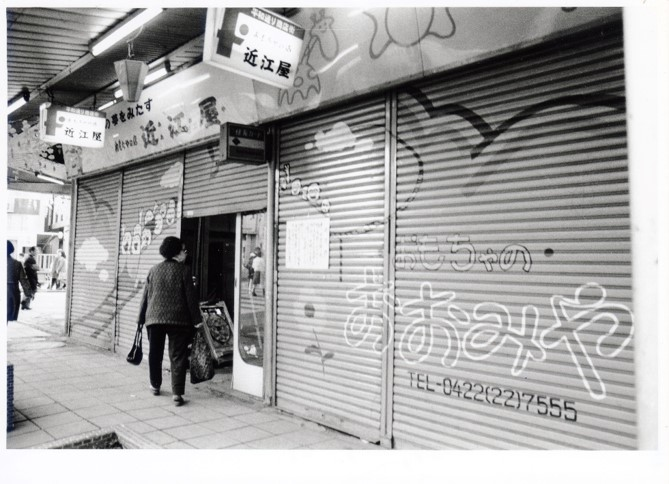
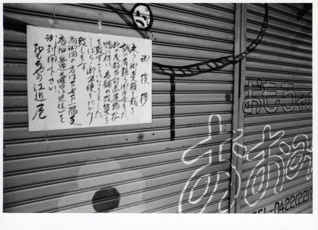
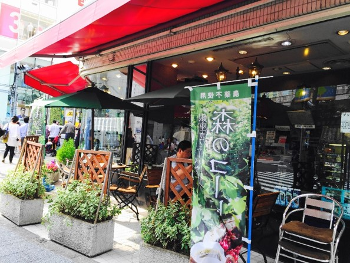

近江屋



この写真は、平和通り沿いで現在はパルコになっている場所にあったおもちゃの店「近江屋」である。中央の写真に写っている張り紙には「此の度都市計画道路拡張に伴い、店舗の改築を致すことになりました」と記されている。実際にはこの場所一帯にパルコの建設工事をおこなうための閉店だった。記録によれば買収契約は1975（昭和50）年に結ばれているので、1975年～1976年頃の写真と推定される。この写真と同時期に撮影されたと推定される公園通り沿いの店舗の写真にも、改築や閉店の挨拶が書かれた張り紙が多く見られ、拡幅工事が本格的に進み始めていたことが分かる。
おもちゃの店「近江屋」は地元の子どもたちに愛され、1972年にオープンした吉祥寺F＆Fビルに2号店を出していた。貼り紙には「尚御用の方はF＆F一階支店（中略）を御利用下さい」という文章も見られる。パルコが完成したのは1980（昭和55）年。これを機に、パルコの客層に合わせて業態転換をはかることになり、おもちゃの店「近江屋」は本格珈琲の店「近江屋」となってパルコ内にオープンした。広いガラスに囲まれた店内からは平和通りと公園通りの交差点が見渡せ、吉祥寺を歩く人々を見ながらお茶を楽しめる。吉祥寺の人々の憩いの場として、現在も同じ場所で営業を続けている。